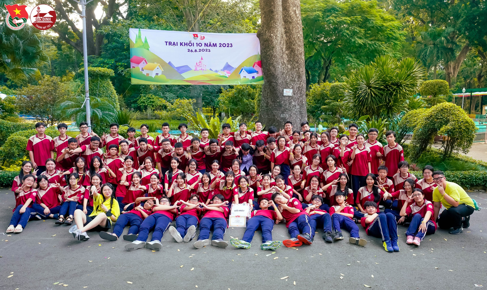
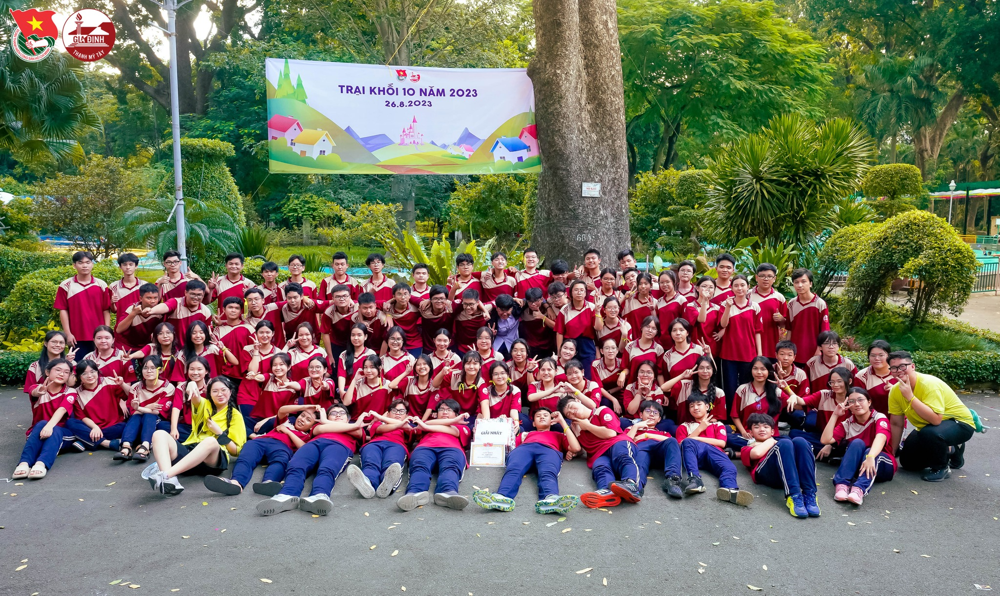
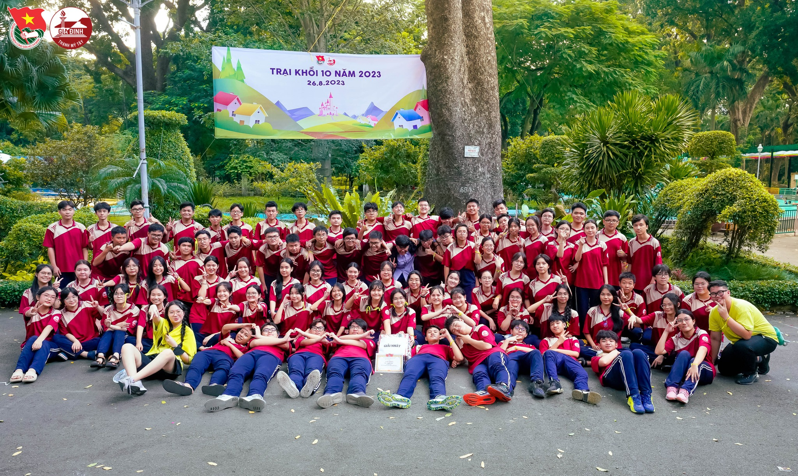

THPT GIA ĐỊNH
Học, học nữa, học mãi.
–Vladimir Ilyich Lenin
 



Học, học nữa, học mãi.

Cơ sở vật chất tại trường THPT Gia Định đạt cấp độ 1, được sở giáo dục và Thành phố Hồ Chí Minh công nhận vào năm 2020.
Từ năm 1975 đến nay, trường THPT Gia Định lần lượt được quản lý, điều hành của 8 thầy, cô Hiệu trưởng, được liệt kê trong bảng sau:
| Giai đoạn | Hiệu trưởng | Năm sinh, nơi sinh | Học vấn, bằng cấp |
|---|---|---|---|
| 1975 - 1976 | Thầy Lâm Quang Huấn | 1933, Rạch Giá | Tốt nghiệp bằng Proficiency Anh ngữ |
| 1976 - 1978 | Thầy Trần Thiên Niên | 1925, Quảng Bình | Đại học Sư phạm Hà Nội |
| 1978 - 1979 | Thầy Phạm Lê Văn | 1940, Thành phố Hồ Chí Minh | Đại học Sư phạm Sài Gòn |
| 1980 - 1981 | Cô Nguyễn Ngọc Anh | 1935 | Đại học Sư phạm Hà Nội |
| 1982 - 1997 | Thầy Nguyễn Hồng Hải | 1941, Quảng Ngãi | Đại học Sư phạm Hà Nội |
| 1997 - 2003 | Cô Tô Thị Lịch | 1946, Thái Bình | Đại học Sư phạm Hà Nội |
| 2003 - 2006 | Thầy Phạm Văn Phiệt | 1953, Quảng Ninh | Đại học Khoa học tự nhiên, Thành phố Hồ Chí Minh (1975) |
| Tháng 9, 2006 - 2017 | Cô Nguyễn Thị Thu Cúc | 1962, Quảng Nam | Cử nhân môn Hóa học, Đại học Sư phạm Thành phố Hồ Chí Minh (1984) |
| Tháng 6, 2017- tháng 1, 2021 | Thầy Nguyễn Bảo Quốc | 1979 | Thạc sĩ Sư phạm Toán học, Đại học Sư phạm Thành phố Hồ Chí Minh (2001) |
| Tháng 1, 2021 - nay | Cô Nguyễn Ngọc Khánh Vân | 1981 | Thạc sĩ Hóa học Vô cơ và ứng dụng |